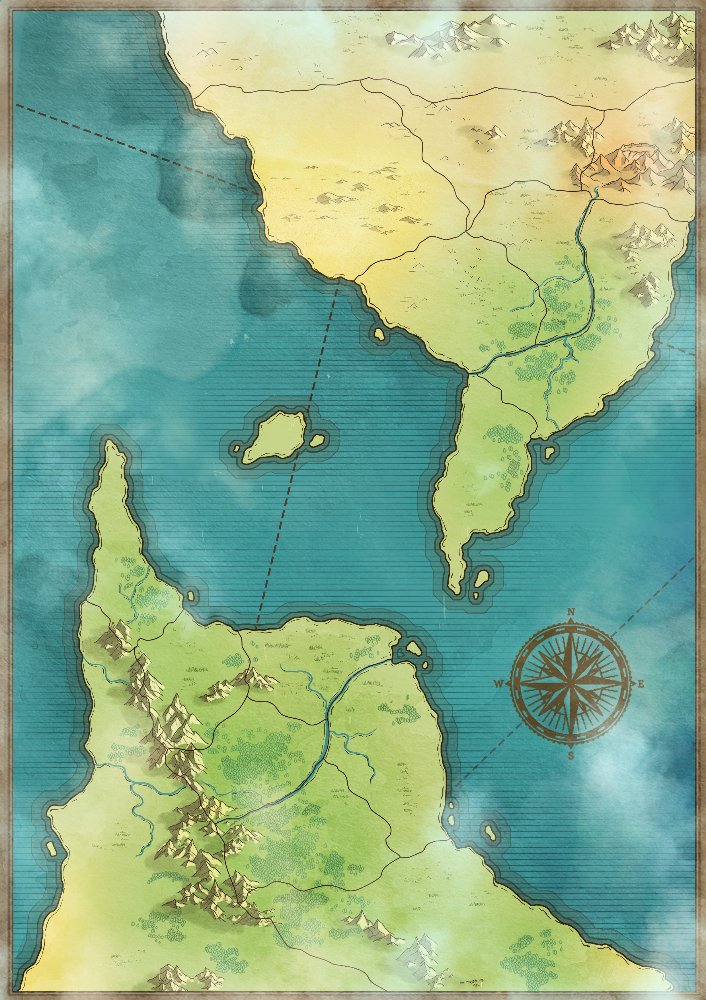

地理设定
两片大陆、亚特亚海、科麦尔岛 · 点击地图放大 · 点击城市查看详情

大陆总览
目前世界已探明的陆地部分由两片大陆组成，率先迎来黎明的被称为"雷凯尼大陆"，另一片则被称为"塔加休大陆"。两片大陆各分布有一座延绵起伏的高山。两片大陆所围成的海称为亚特亚海。
雷凯尼大陆
率先迎来黎明的大陆。其上最高峰为奥西里火山，是一座活火山，附近出产色泽鲜艳的宝石。受火山影响，火山东部降水稀少变成最大的沙漠——桑多马沙漠。只有横穿沙漠的西斯南河两岸才有稀少的绿洲和人烟。
奥西里火山
雷凯尼大陆最高峰，活火山。附近出产的宝石经高温岩浆淬炼，色泽鲜艳夺目，晶莹剔透。
桑多马沙漠
受火山影响形成的大沙漠。只有西斯南河两岸有稀少的绿洲和人烟。
西斯南河
横穿沙漠的河流，两岸有绿洲。
蓬落科雨林
地图标注的雨林区域。
塔加休大陆
另一片大陆。山顶永远覆盖着积雪的新卡吉纳峰是最高峰，比奥西里火山高出很多。雪山之下是盘旋交错的优质矿脉，提供了世界矿物总需求量的80%以上。雪山融水沿地下河汇聚，形成了最大的河流维托巴河以及其他数十条河流。
新卡吉纳峰
山顶永远覆盖积雪。雪山之下是优质矿脉，提供世界80%+矿物需求。融水形成河流。
维托巴河
最大的河流，由新卡吉纳峰雪山融水汇聚形成。
亚特亚海
两片大陆所围成的海。河流最终流入亚特亚海，并在海岸处形成了广袤的诺达尔平原，这片平原也是杜兰德尔最为发达的地区之一。
科麦尔岛
自从那颗陨石降落化身为岛之后，重返地表的人们都将这座岛视为灾厄的象征，以至于没人敢踏上那座岛屿半步。比桑尔城中还算富裕的奥瓦顿家族花重金在科麦尔岛上建起宅邸，并且举家搬迁到岛上。奥瓦顿家族发现可以将科麦尔岛上出产的矿石出售（纯度非常高），赚得盆满钵满。剩余的钱财大部分用来当作杜兰德尔统一这片大陆的后勤支援。作为交换条件，在科麦尔岛上建立一个只属于这个家族的城市，并由奥瓦顿家族实行自治。
城市简介（点击查看详情）
科麦尔城
奥瓦顿家族建立，自治城市，科麦尔大学所在地。
Comale
比桑尔城
杜兰德尔发源地，奥瓦顿家族来自此城。
Besongr
基戈萨港
重工城市，核能发电厂，辐射区，特纳比睿势力。
Gegoxa
南格塔斯
游侠&灯塔驻扎地。
Nhogetas
萨尔凡尼基
毒气烟尘覆盖，最终阵线控制区。
Sarvaniki
凯各哥尔玛
最北端城市，陨星生物最后出现地，边境之塔。
Kevogelma
博拉角
海边城市，爆破&雷管驻扎地。
Bora
拜利德
寒霜&泡沫、卡尔文&叶佩斯娅驻扎地。
Belid
塞烈加
皮纳瑞尔在此活动，中心医院。
Selleja